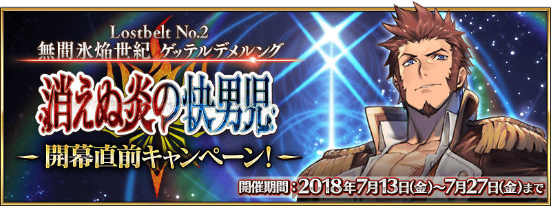
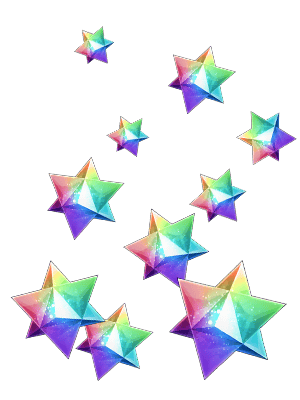
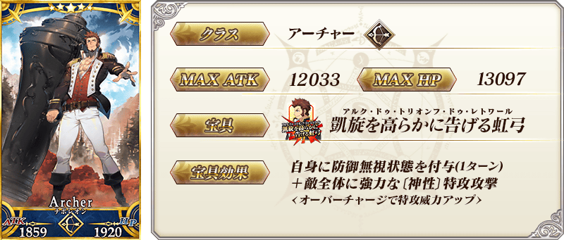
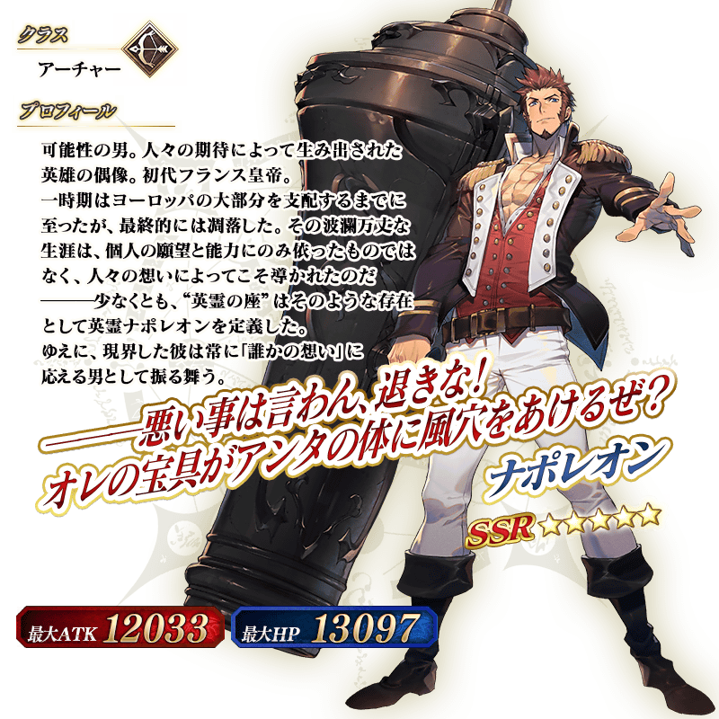

舉辦主線關卡第2部 第2章「Lostbelt No.2 無間冰焰世紀 諸神黃昏 不滅之火的好漢」的開幕前夕宣傳活動！
◆舉辦期間◆
2018年7月13日(五) 17:00～7月27日(五) 11:59
在7月27日(五) AM2:59前的期間，向通過主線關卡第2部 第1章「Lostbelt No.1 永久凍土帝國 安娜塔西亞 獸國的皇女」的全員Master贈送聖晶石10個！
◆舉辦期間◆
2018年7月14日(六) AM3:00～7月28日(六) AM2:59
◆贈送對象◆
7月27日(五) AM2:59前通過主線關卡第2部 第1章「Lostbelt No.1 永久凍土帝國 安娜塔西亞 獸國的皇女的Master對象
※已通過主線關卡第2部 第1章「Lostbelt No.1 永久凍土帝國 安娜塔西亞 獸國的皇女」的Master也是贈送對象。
※在期間內未通過的話無法領取。
|
◆領取期間◆ |
 |
主線關卡第2部 第1章「Lostbelt No.1 永久凍土帝國 安娜塔西亞 獸國的皇女」的AP消耗量以期間限定變成1/2！
尚未通過主線關卡第2部 第1章「Lostbelt No.1 永久凍土帝國 安娜塔西亞 獸國的皇女」的Master，無論如何請藉此機會通過吧！
◆舉辦期間◆
2018年7月13日(五) 17:00～7月27日(五) 11:59
◆對象關卡◆
第2部 第1章「Lostbelt No.1 永久凍土帝國 安娜塔西亞 獸國的皇女」的主線關卡
※請注意自由關卡為對象外。
※在戰鬥中撤退的情況AP的消耗仍是1/2。
現在永久舉辦的AP消耗量1/2狀態，再追加AP消耗量1/2，主線關卡第1部(從特異點F到終局特異點)的AP消耗量以期間限定變成1/4！
尚未通過至主線關卡第1部的Master，無論如何請藉此機會通過至終局特異點！
◆舉辦期間◆
2018年7月13日(五) 17:00～7月27日(五) 11:59
◆對象關卡◆
主線關卡第1部(從特異點F到終局特異點)
※請注意自由關卡為對象外。
※在戰鬥中撤退的情況AP的消耗仍是1/4。
◆「拿破崙Pick Up召喚」期間◆
期間:2018年7月13日(五) 17:00～7月27日(五) 11:59
舉辦期間限定「拿破崙Pick Up召喚」！
「★5(SSR)拿破崙」新登場！
※未到達第2部 第1章「Lostbelt No.1 永久凍土帝國 安娜塔西亞 獸國的皇女」的狀態也能進行「拿破崙Pick Up召喚」。
※拿破崙在Pick Up期間結束後追加至故事召喚。
詳情請在聖晶石召喚畫面左下的召喚詳細確認。
Pick Up期間中，新登場Servant的出現機率提升！
10次召喚中確定1張★4(SR)以上和確定1位★3(R)以上的Servant！
※確定★4(SR)以上包含Servant和概念禮裝。


介紹拿破崙的寶具演出！
在「Fate/Grand Order」官方網站內的公告中，公開了「★5(SSR)拿破崙」的寶具演出。敬請確認。
關於第2部 第2章「Lostbelt No.2 無間冰焰世紀 諸神黃昏 不滅之火的好漢」詳情請自下述橫幅確認。